runs / 2026-10-19 / 143115-399000-baseline-3a84dfba
ボクセル五重塔庭園を単一HTMLで完成、65分・14エラーは全て回復
qwen3.8-flash-next-unsloth-ud-q4_k_xl（thinking high）が、ボクセルアート風の下層塔庭園ページを単一HTMLで生成する課題に、107回の主呼び出し・3,896.8秒・出力トークン177,801で取り組み、status=completed / exit 0 で終えた。前半5呼でファイルを書き切り、残り102呼はスクリーンショット検証・edit修正・池のデバッグに充て、最終成果物 voxel-pagoda-garden.html（47,680バイト）を納品した。途中ツールエラー14件を記録したが、いずれも再取得で復帰し停止には至っていない。
成果物
work/voxel-pagoda-garden.html（47,680 バイト）をそのまま同梱している。重いシーンもあるため、必要なときだけ起動する。
voxel-pagoda-garden.html
47 KB · 起動するまで読み込まない
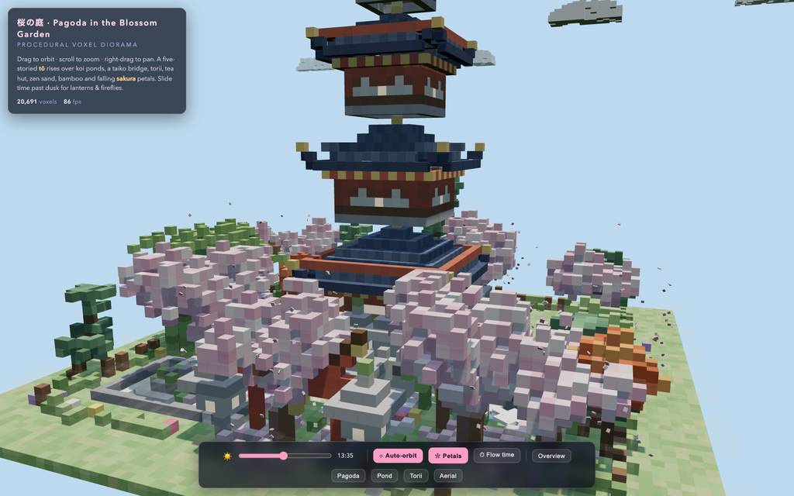
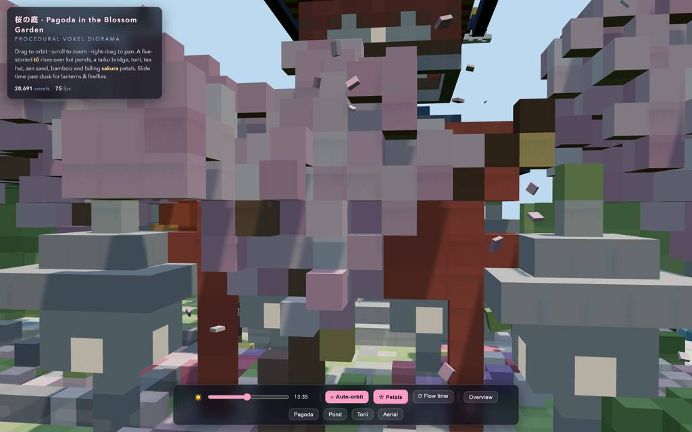
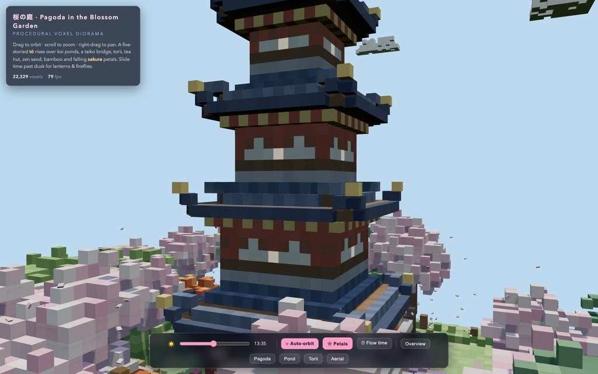
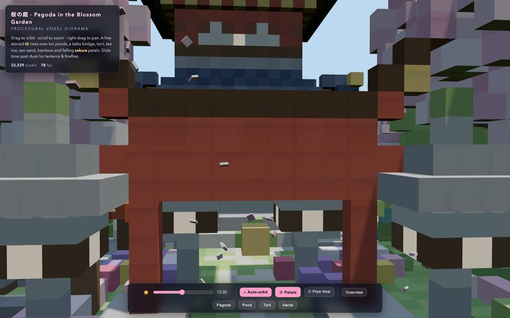
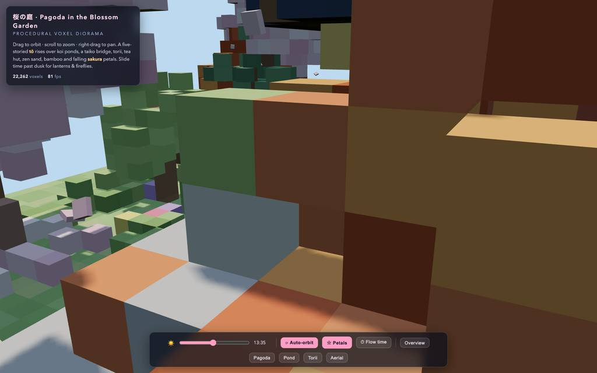
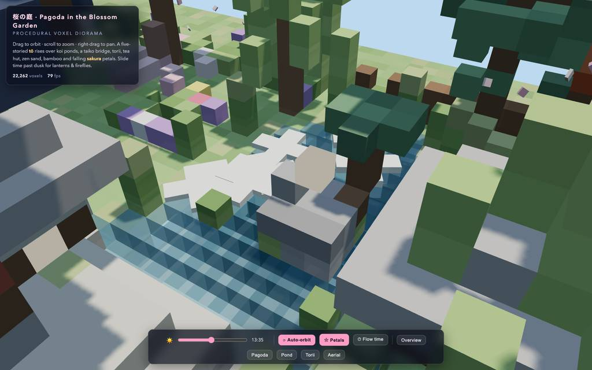
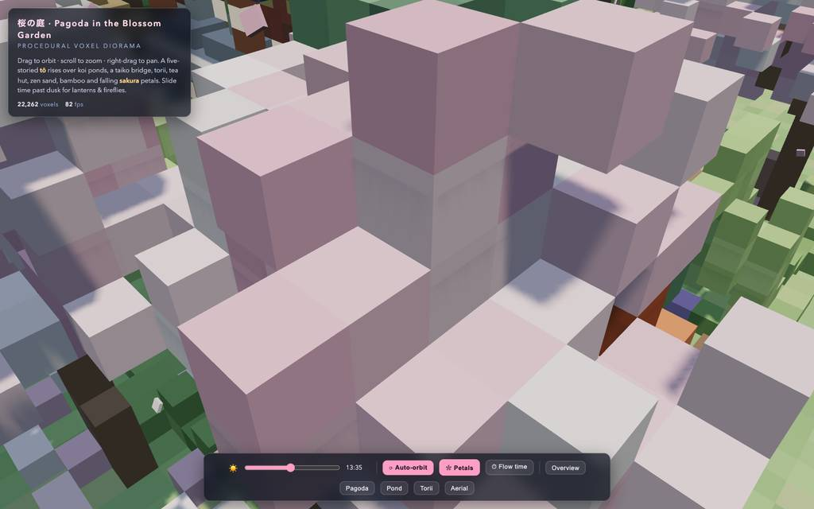
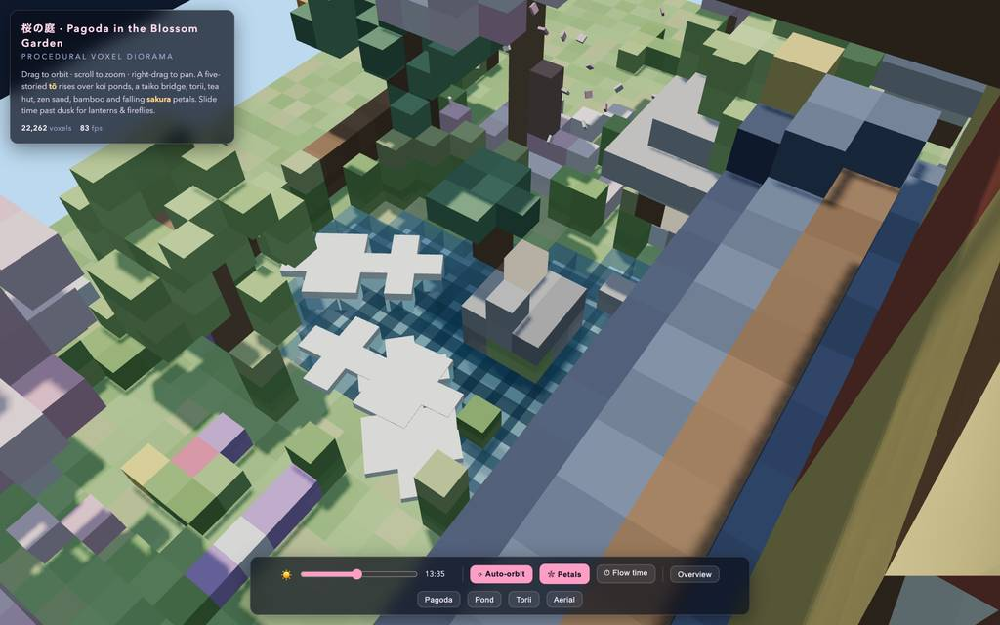
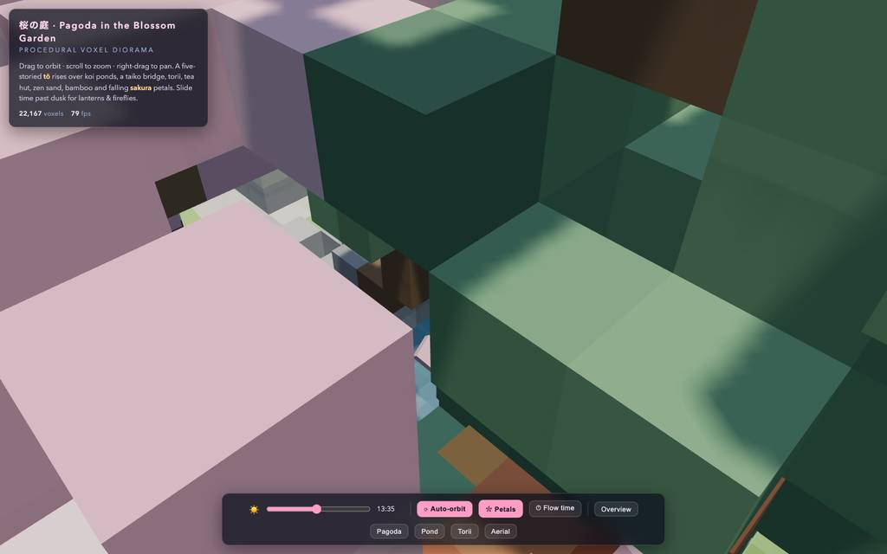
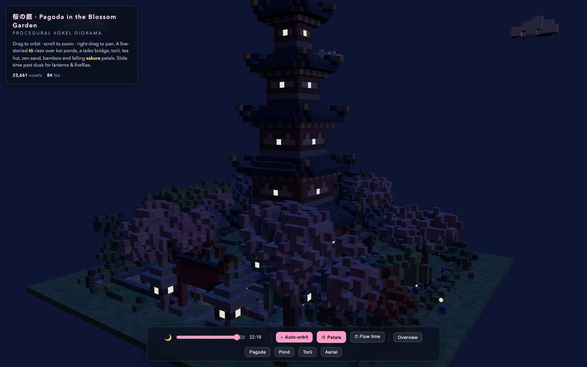
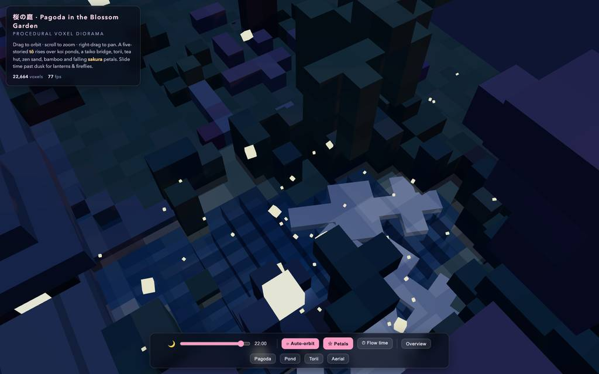
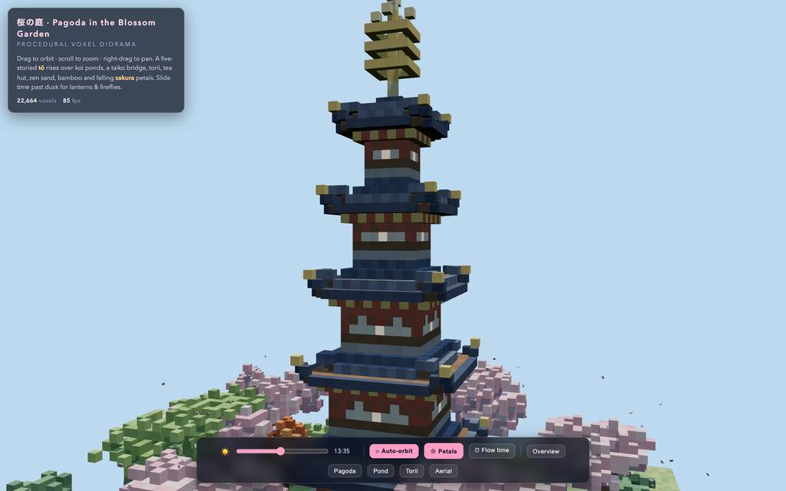
全 45 枚から等間隔に 12 枚を選んでいる。logs/events.jsonl の画像ブロックを内容ハッシュで重複排除して時系列に並べた、制作中の検証用スクリーンショット。最終版とは限らない。
成果物の構成
| 要素 | 内容 |
|---|---|
| 成果物 | voxel-pagoda-garden.html（約47KB・47,680バイト）の単一ファイル。CSS・UI・手続き生成・レンダラを内包し、外部依存は importmap 経由の Three.js r160 のみで初回表示にネット接続が必要。 |
| 塔 | 五重塔: 反り上がる金色の屋根先端、斗拱帯、四面の格子窓（夜間発光）、欄間の発光、相輪（金環3・風珠・宝珠）、石基壇と階段、狛犬対、軒下提灯。 |
| 植栽 | 桜8本＋落下花びら320枚、カエデ、雲形剪定の松の丘、枝垂柳、竹36本、低木・花壇・野花。約22,700ボクセルの浮遊島。 |
| 水 | 透かし揺らぎと奥行き勾配のある鯉池、水面下で泳ぐ魚形の鯉3匹、小島・蓮・葦・飛石、谷を切る滝（3セル帯）と瀑壺。 |
| 構造物 | 朱の鳥居（笠木・額束）、太鼓橋、茅葺茶屋（障子発光）、枯山水・苔石組、石灯籠（夜は灯芯）、鹿威し（水受→傾き→打音）、蹲踞、番傘・腰掛け・石井戸。 |
| 昼夜 | 夜明け→正午→夕暮れ→夜の時間スライダー、移動する日陰、夕方の暖色光、青い月光、星、流れる雲、霧、夜間のホタル、窓などの昼夜のインスタンス色補間。 |
| 操作 | 回転/拡大/パン、自動回転切替、花びら切替、時間フロー、5種のカメラプリセット（全体/塔/池/鳥居/俯瞰）、ボクセル数とFPSの表示。 |
| 検証主張 | ヘッドレスChromiumで75〜88fps、コンソールエラーゼロ、全プリセットと時間帯のスクショ確認を最終報告が明記。 |
モデルの最終メッセージから読み取った内容。コードの確認はしていない。
タイムライン
107 回の API 呼び出しを時間順に並べた。上段の帯の幅が各呼び出しの所要時間で、帯の間の空白がツールの実行時間。下段はその時点のコンテキスト長。
最も長い 2 回の生成（#4 513 秒・#3 322 秒）で 835.1 秒、壁時計の 21.4%。出力トークンの上位 4 回（#4・#3・#5・#2）で全体の 46.5%（82,668 / 177,801）。推論以外（ツール実行など）は約 213 秒（5%）。
フェーズ別の内訳
| フェーズ | 経過 | 所要 | 全体に占める割合 | 呼び出し | 出力 tok | 何をしたか |
|---|---|---|---|---|---|---|
| 初期生成 | 0:00–25:39 | 1539 秒 | 39.5% | 5 | 87,048 | bashでワークスペース確認とthree.jsのCDN到達性を調べ、todoで計画後、write計4使用（E1のpath欠落失敗を含む）でシーン全体ファイルを作成・書き直した。 |
| 初回検証 | 25:39–26:58 | 79 秒 | 2.0% | 5 | 2,517 | HTTP配信とブラウザツール起動後、コンソール確認とファーストスクショを撮影し、夜・夕・池・鳥居のビューを収集した（E2・E3発生）。 |
| 全体修正 | 26:58–39:31 | 753 秒 | 19.3% | 22 | 33,939 | read/grepで行番号を特定し、屋根の空心・夜間照明・霧・小道・ランタン・カメラビューをeditで修正。星・月明かりを追加し、再キャプチャで確認した。 |
| 池カメラ | 39:31–47:12 | 461 秒 | 11.8% | 18 | 15,535 | 池プリセットの位置を複数回やり直し、星の拡大やcache-bust再読込を挟みつつ、池・空中ビューの構図をevalで検証した。 |
| 白塊調査 | 47:12–52:49 | 338 秒 | 8.7% | 20 | 14,465 | 池面上の白い物体_DEBUG_ため、editでシーンを露出し、raycastとボクセルダンプで調査。evalの失敗（E9）を挟み、#70で植台重複と花色を特定・修正した。 |
| 色調反復 | 52:49–62:01 | 552 秒 | 14.2% | 23 | 19,380 | 池の形状・色とカエデの紅を濃くし、葦・蓮、水面をカメラの構図を反復調整。最後に明るいセルの再調査から雲と鯉の修正へ進んだ。 |
| 最終調整 | 62:01–64:54 | 173 秒 | 4.4% | 14 | 4,917 | 鯉の形状・雲帯・夜間輝度・塔の構図を最終仕上げ、デバッグ用露出を削除し、スクショ片付けとサーバー停止後、成果物名を確定して納品した。 |
フェーズの切れ目は、ログから読み取れる作業内容の変わり目（LLM による区切り）。所要時間は、そのフェーズの最初の呼び出しの開始から次のフェーズの最初の呼び出しの開始まで。
107 回の呼び出しを表で見る
| # | 種別 | フェーズ | 開始 | 所要 秒 | prompt | うち cache | 出力 | tok/s | HTTP | ツール |
|---|---|---|---|---|---|---|---|---|---|---|
| 1 | 主ループ | 初期生成 | 0:00 | 89.0 | 7,804 | 7,624 | 4,380 | 49.7 | 200 | bash + bash |
| 2 | 主ループ | 初期生成 | 1:29 | 299.0 | 12,480 | 7,799 | 14,725 | 49.6 | 200 | todo |
| 3 | 主ループ | 初期生成 | 6:29 | 321.7 | 27,405 | 12,475 | 19,718 | 62.4 | 200 | write |
| 4 | 主ループ | 初期生成 | 11:50 | 513.4 | 47,141 | 27,400 | 28,919 | 57.2 | 200 | write |
| 5 | 主ループ | 初期生成 | 20:24 | 315.0 | 76,205 | 47,136 | 19,306 | 63.6 | 200 | write |
| 6 | 主ループ | 初回検証 | 25:39 | 11.9 | 95,546 | 76,200 | 190 | 52.5 | 200 | bash + read |
| 7 | 主ループ | 初回検証 | 25:51 | 10.1 | 98,834 | 95,737 | 409 | 50.7 | 200 | eval |
| 8 | 主ループ | 初回検証 | 26:01 | 5.0 | 99,443 | 99,245 | 231 | 55.3 | 200 | eval |
| 9 | 主ループ | 初回検証 | 26:13 | 25.5 | 100,526 | 99,678 | 1,219 | 51.0 | 200 | eval |
| 10 | 主ループ | 初回検証 | 26:38 | 9.6 | 101,869 | 101,744 | 468 | 53.0 | 200 | eval |
| 11 | 主ループ | 全体修正 | 26:58 | 212.0 | 105,334 | 99,438 | 10,472 | 50.2 | 200 | read + read |
| 12 | 主ループ | 全体修正 | 30:30 | 3.5 | 116,647 | 115,806 | 127 | 61.7 | 200 | read + read |
| 13 | 主ループ | 全体修正 | 30:34 | 5.3 | 119,219 | 116,773 | 179 | 52.8 | 200 | read + read |
| 14 | 主ループ | 全体修正 | 30:39 | 5.2 | 120,457 | 119,397 | 181 | 53.5 | 200 | read + read |
| 15 | 主ループ | 全体修正 | 30:44 | 6.9 | 123,280 | 120,638 | 281 | 56.5 | 200 | grep |
| 16 | 主ループ | 全体修正 | 30:51 | 88.9 | 125,013 | 123,562 | 4,635 | 53.2 | 200 | read + grep |
| 17 | 主ループ | 全体修正 | 32:20 | 40.5 | 130,156 | 129,647 | 2,248 | 57.2 | 200 | edit |
| 18 | 主ループ | 全体修正 | 33:01 | 5.0 | 132,524 | 132,404 | 189 | 44.9 | 200 | grep |
| 19 | 主ループ | 全体修正 | 33:06 | 37.0 | 132,880 | 132,713 | 2,216 | 61.4 | 200 | edit |
| 20 | 主ループ | 全体修正 | 33:43 | 42.7 | 135,176 | 135,098 | 2,606 | 62.1 | 200 | edit |
| 21 | 主ループ | 全体修正 | 34:25 | 9.3 | 141,462 | 137,782 | 310 | 43.5 | 200 | read |
| 22 | 主ループ | 全体修正 | 34:35 | 9.3 | 142,217 | 141,772 | 380 | 48.0 | 200 | edit |
| 23 | 主ループ | 全体修正 | 34:44 | 6.5 | 142,879 | 142,596 | 264 | 49.0 | 200 | eval |
| 24 | 主ループ | 全体修正 | 34:57 | 48.7 | 143,336 | 99,438 | 1,420 | 46.9 | 200 | read + grep |
| 25 | 主ループ | 全体修正 | 35:45 | 39.9 | 146,060 | 144,755 | 2,035 | 53.4 | 200 | edit |
| 26 | 主ループ | 全体修正 | 36:25 | 10.9 | 149,635 | 148,097 | 414 | 46.2 | 200 | grep |
| 27 | 主ループ | 全体修正 | 36:36 | 3.6 | 150,194 | 150,048 | 136 | 50.7 | 200 | edit |
| 28 | 主ループ | 全体修正 | 36:40 | 8.3 | 150,475 | 150,332 | 429 | 57.6 | 200 | eval |
| 29 | 主ループ | 全体修正 | 37:05 | 96.1 | 151,403 | 99,438 | 3,694 | 49.7 | 200 | grep |
| 30 | 主ループ | 全体修正 | 38:41 | 23.6 | 156,515 | 155,096 | 1,197 | 55.1 | 200 | edit |
| 31 | 主ループ | 全体修正 | 39:05 | 5.7 | 159,048 | 157,712 | 184 | 48.5 | 200 | todo + todo |
| 32 | 主ループ | 全体修正 | 39:11 | 7.0 | 159,576 | 159,232 | 342 | 57.2 | 200 | eval |
| 33 | 主ループ | 池カメラ | 39:31 | 65.9 | 160,327 | 145,518 | 2,886 | 49.0 | 200 | edit |
| 34 | 主ループ | 池カメラ | 40:36 | 10.3 | 163,371 | 163,213 | 485 | 51.2 | 200 | edit |
| 35 | 主ループ | 池カメラ | 40:47 | 10.8 | 164,013 | 163,857 | 523 | 52.6 | 200 | eval |
| 36 | 主ループ | 池カメラ | 41:11 | 39.1 | 164,716 | 145,518 | 1,426 | 47.7 | 200 | edit |
| 37 | 主ループ | 池カメラ | 41:51 | 6.0 | 166,300 | 166,142 | 225 | 43.9 | 200 | edit |
| 38 | 主ループ | 池カメラ | 41:56 | 2.9 | 166,738 | 166,524 | 93 | 50.3 | 200 | edit |
| 39 | 主ループ | 池カメラ | 41:59 | 2.5 | 166,961 | 166,835 | 93 | 56.1 | 200 | edit |
| 40 | 主ループ | 池カメラ | 42:02 | 9.0 | 167,203 | 167,056 | 434 | 53.4 | 200 | eval |
| 41 | 主ループ | 池カメラ | 42:21 | 44.1 | 167,900 | 145,518 | 1,712 | 50.5 | 200 | edit |
| 42 | 主ループ | 池カメラ | 43:06 | 17.2 | 169,770 | 169,612 | 853 | 52.3 | 200 | edit |
| 43 | 主ループ | 池カメラ | 43:23 | 6.9 | 170,782 | 170,623 | 324 | 53.5 | 200 | edit |
| 44 | 主ループ | 池カメラ | 43:30 | 7.6 | 171,264 | 171,105 | 353 | 52.1 | 200 | eval |
| 45 | 主ループ | 池カメラ | 43:44 | 38.2 | 171,727 | 145,518 | 1,219 | 46.4 | 200 | eval |
| 46 | 主ループ | 池カメラ | 44:32 | 45.7 | 173,174 | 145,518 | 1,584 | 47.6 | 200 | todo + edit |
| 47 | 主ループ | 池カメラ | 45:18 | 7.7 | 175,056 | 174,758 | 350 | 53.5 | 200 | eval |
| 48 | 主ループ | 池カメラ | 45:33 | 48.4 | 175,586 | 145,518 | 1,701 | 48.1 | 200 | edit |
| 49 | 主ループ | 池カメラ | 46:22 | 4.3 | 177,444 | 177,287 | 206 | 60.2 | 200 | eval |
| 50 | 主ループ | 池カメラ | 46:33 | 38.4 | 177,747 | 145,518 | 1,068 | 45.3 | 200 | eval |
| 51 | 主ループ | 白塊調査 | 47:12 | 41.8 | 178,979 | 168,558 | 1,645 | 45.6 | 200 | edit |
| 52 | 主ループ | 白塊調査 | 47:54 | 1.9 | 180,743 | 180,624 | 62 | 56.0 | 200 | read |
| 53 | 主ループ | 白塊調査 | 47:56 | 3.0 | 181,054 | 180,805 | 116 | 60.1 | 200 | edit |
| 54 | 主ループ | 白塊調査 | 47:59 | 11.7 | 181,283 | 181,170 | 571 | 52.7 | 200 | eval |
| 55 | 主ループ | 白塊調査 | 48:15 | 7.8 | 182,093 | 181,855 | 374 | 55.1 | 200 | eval |
| 56 | 主ループ | 白塊調査 | 48:23 | 8.4 | 182,485 | 182,466 | 422 | 53.3 | 200 | eval |
| 57 | 主ループ | 白塊調査 | 48:32 | 4.7 | 182,925 | 182,907 | 212 | 48.8 | 200 | eval |
| 58 | 主ループ | 白塊調査 | 48:37 | 6.1 | 183,155 | 183,136 | 285 | 50.2 | 200 | eval |
| 59 | 主ループ | 白塊調査 | 48:43 | 3.4 | 183,458 | 183,442 | 166 | 53.7 | 200 | eval |
| 60 | 主ループ | 白塊調査 | 48:46 | 3.6 | 183,642 | 183,626 | 154 | 48.8 | 200 | eval |
| 61 | 主ループ | 白塊調査 | 48:50 | 3.4 | 183,813 | 183,795 | 151 | 50.1 | 200 | eval |
| 62 | 主ループ | 白塊調査 | 48:53 | 3.8 | 183,988 | 183,966 | 169 | 51.8 | 200 | eval |
| 63 | 主ループ | 白塊調査 | 48:57 | 6.5 | 184,181 | 184,157 | 333 | 55.2 | 200 | eval |
| 64 | 主ループ | 白塊調査 | 49:04 | 29.8 | 184,736 | 184,513 | 1,307 | 45.1 | 200 | eval |
| 65 | 主ループ | 白塊調査 | 49:34 | 21.7 | 186,142 | 168,558 | 581 | 45.5 | 200 | edit |
| 66 | 主ループ | 白塊調査 | 49:56 | 5.7 | 186,837 | 186,722 | 285 | 59.0 | 200 | eval |
| 67 | 主ループ | 白塊調査 | 50:06 | 39.7 | 187,912 | 187,121 | 1,848 | 48.3 | 200 | eval |
| 68 | 主ループ | 白塊調査 | 50:46 | 3.7 | 190,528 | 189,759 | 127 | 50.8 | 200 | bash |
| 69 | 主ループ | 白塊調査 | 50:50 | 58.0 | 191,180 | 190,655 | 2,781 | 49.0 | 200 | eval |
| 70 | 主ループ | 白塊調査 | 51:48 | 61.3 | 194,499 | 193,963 | 2,876 | 47.8 | 200 | edit |
| 71 | 主ループ | 色調反復 | 52:49 | 14.4 | 197,565 | 194,494 | 611 | 50.8 | 200 | read |
| 72 | 主ループ | 色調反復 | 53:04 | 19.8 | 199,013 | 198,176 | 972 | 53.4 | 200 | edit |
| 73 | 主ループ | 色調反復 | 53:24 | 7.8 | 201,391 | 199,985 | 270 | 46.0 | 200 | edit |
| 74 | 主ループ | 色調反復 | 53:32 | 9.5 | 201,849 | 201,663 | 412 | 48.4 | 200 | eval |
| 75 | 主ループ | 色調反復 | 53:48 | 59.7 | 202,395 | 168,558 | 2,119 | 48.2 | 200 | eval |
| 76 | 主ループ | 色調反復 | 54:48 | 30.3 | 204,792 | 204,516 | 1,415 | 48.3 | 200 | edit |
| 77 | 主ループ | 色調反復 | 55:18 | 3.8 | 206,383 | 206,207 | 131 | 47.8 | 200 | read |
| 78 | 主ループ | 色調反復 | 55:22 | 2.5 | 206,912 | 206,513 | 74 | 58.6 | 200 | grep |
| 79 | 主ループ | 色調反復 | 55:25 | 5.4 | 207,197 | 206,985 | 213 | 48.0 | 200 | read |
| 80 | 主ループ | 色調反復 | 55:30 | 4.6 | 207,706 | 207,411 | 186 | 54.7 | 200 | edit |
| 81 | 主ループ | 色調反復 | 55:35 | 4.7 | 208,436 | 207,892 | 188 | 55.9 | 200 | eval |
| 82 | 主ループ | 色調反復 | 55:47 | 33.9 | 208,723 | 168,558 | 725 | 48.1 | 200 | edit |
| 83 | 主ループ | 色調反復 | 56:21 | 6.1 | 209,606 | 209,448 | 262 | 50.3 | 200 | eval |
| 84 | 主ループ | 色調反復 | 56:34 | 69.8 | 209,967 | 168,558 | 2,335 | 45.8 | 200 | edit |
| 85 | 主ループ | 色調反復 | 57:44 | 10.9 | 212,686 | 212,301 | 478 | 49.7 | 200 | eval |
| 86 | 主ループ | 色調反復 | 58:08 | 55.2 | 213,490 | 168,558 | 1,675 | 47.4 | 200 | eval |
| 87 | 主ループ | 色調反復 | 59:03 | 27.3 | 215,182 | 215,164 | 1,307 | 48.6 | 200 | eval |
| 88 | 主ループ | 色調反復 | 59:31 | 29.2 | 216,506 | 216,489 | 1,321 | 45.9 | 200 | eval |
| 89 | 主ループ | 色調反復 | 60:00 | 8.7 | 217,894 | 216,501 | 349 | 53.4 | 200 | eval |
| 90 | 主ループ | 色調反復 | 60:18 | 33.1 | 218,425 | 191,598 | 1,010 | 49.6 | 200 | eval |
| 91 | 主ループ | 色調反復 | 60:51 | 13.9 | 219,459 | 219,437 | 753 | 56.1 | 200 | eval |
| 92 | 主ループ | 色調反復 | 61:07 | 8.7 | 220,383 | 220,211 | 466 | 59.9 | 200 | eval |
| 93 | 主ループ | 色調反復 | 61:16 | 45.1 | 220,914 | 220,848 | 2,108 | 48.0 | 200 | edit |
| 94 | 主ループ | 最終調整 | 62:01 | 3.5 | 223,423 | 223,023 | 97 | 44.0 | 200 | read |
| 95 | 主ループ | 最終調整 | 62:05 | 10.4 | 224,784 | 223,520 | 453 | 53.6 | 200 | edit |
| 96 | 主ループ | 最終調整 | 62:15 | 9.0 | 225,744 | 225,238 | 335 | 43.9 | 200 | grep |
| 97 | 主ループ | 最終調整 | 62:24 | 2.1 | 226,229 | 226,079 | 67 | 59.3 | 200 | read |
| 98 | 主ループ | 最終調整 | 62:26 | 3.1 | 226,544 | 226,296 | 109 | 56.4 | 200 | edit |
| 99 | 主ループ | 最終調整 | 62:29 | 7.8 | 226,761 | 226,654 | 393 | 56.6 | 200 | eval |
| 100 | 主ループ | 最終調整 | 62:50 | 39.9 | 227,425 | 191,598 | 1,050 | 45.1 | 200 | edit |
| 101 | 主ループ | 最終調整 | 63:30 | 3.5 | 228,616 | 228,476 | 125 | 48.1 | 200 | grep |
| 102 | 主ループ | 最終調整 | 63:34 | 3.6 | 228,990 | 228,740 | 128 | 49.6 | 200 | read |
| 103 | 主ループ | 最終調整 | 63:37 | 3.7 | 229,306 | 229,118 | 149 | 56.2 | 200 | edit |
| 104 | 主ループ | 最終調整 | 63:41 | 10.0 | 229,767 | 229,454 | 473 | 53.4 | 200 | eval |
| 105 | 主ループ | 最終調整 | 64:02 | 30.6 | 230,445 | 191,598 | 577 | 47.9 | 200 | bash + write |
| 106 | 主ループ | 最終調整 | 64:33 | 6.3 | 231,157 | 231,023 | 254 | 46.4 | 200 | todo + todo |
| 107 | 主ループ | 最終調整 | 64:39 | 14.9 | 231,655 | 231,411 | 707 | 51.1 | 200 |
試行錯誤
ツールがエラー（isError）を返した結果の一覧。ツールは成功したのにモデル自身が内容を壊したケースは、ここには出ない。
エラーとして記録された 14 件
| 経過 | ツール | 起きたこと | 分類 |
|---|---|---|---|
| 20:24 | write | write呼び出しでpath引数が欠落しバリデーション失敗、即座に再実行された。Validation failed for tool "write": - path: path must be a string (was missing) Received arguments: { "content": "<!DOCTYPE html>\n<html lang=\"en\">\n<head>\n<meta charset=\"utf-8\">\n<meta name=\"vi | パス指定 |
| 26:01 | eval | browser evalのwait_untilに未対応の値 networkidle を渡した。ToolError: browser received invalid arguments: wait_until must be navigation wait condition (was "networkidle") at tG (/$bunfs/root/chunks/cli-c01f2ps6.js:16430:16) at p4e (/$bunfs/root/chunks/cli-y7c | API 誤用 |
| 26:38 | eval | evalスクリプト内で document is not defined のReferenceError。ReferenceError: document is not defined at <anonymous> (browser-run-15abfc90377071c5.js:1:15) at eval (unknown) at <anonymous> (/$bunfs/root/chunks/cli-jktqwgd8.js:411:18) at async run (/$bunfs/root/c | 実行時エラー |
| 33:01 | edit | 表示したことがない276行目への編集でアンカー検証に失敗。This edit anchors to lines 276 of index.html that [index.html#2C82] never displayed (it showed a partial range, a search hit, or a folded summary). Actual file content at those lines: 276: return; Ver | edit 拒否 |
| 33:43 | edit | PUT範囲の末尾が直下行の言い直しで短すぎるとして拒否された。`PUT 290.=304:` rejected: the body ends by restating the 1 line(s) just below the range, but is too short to be the full final content of the selected range. Re-issue with the range covering exactly t | edit 拒否 |
| 41:56 | edit | 733行開始の構文ブロックが解析できず明示行範囲のPUTを要求された。line 1: `PUT 733*:` could not resolve a syntactic block beginning on line 733 (unsupported language, blank/closer line, or parse error). Use `PUT 733.=M:` with explicit lines. 731: const mtx=new THREE | edit 拒否 |
| 41:59 | edit | 734行目が未表示のためアンカー検証に失敗。This edit anchors to lines 734 of index.html that [index.html#F7B2] never displayed (it showed a partial range, a search hit, or a folded summary). Actual file content at those lines: 734: scl.setScal | edit 拒否 |
| 47:54 | edit | 926行目が未表示のためアンカー検証に失敗。This edit anchors to lines 926 of index.html that [index.html#1B4F] never displayed (it showed a partial range, a search hit, or a folded summary). Actual file content at those lines: 926:</body> Veri | edit 拒否 |
| 48:10 | eval | eval（raycast）中にundefinedのプロパティ読み取りTypeError。TypeError: Cannot read properties of undefined (reading '13') at #f (/$bunfs/root/chunks/cli-9dftvayj.js:10857:17) at async evaluate (/$bunfs/root/chunks/cli-9dftvayj.js:10838:25) at async evaluate (/ | 実行時エラー |
| 52:49 | edit | 219・479行が未表示のためアンカー検証に失敗。This edit anchors to lines 219, 479 of index.html that [index.html#2703] never displayed (it showed a partial range, a search hit, or a folded summary). Actual file content at those lines: 219: markPa | edit 拒否 |
| 55:18 | edit | 345・885行が未表示のためアンカー検証に失敗。This edit anchors to lines 345, 885 of index.html that [index.html#4A89] never displayed (it showed a partial range, a search hit, or a folded summary). Actual file content at those lines: 345: const | edit 拒否 |
| 61:05 | eval | evalスクリプトで m.getPosition is not a function。TypeError: m.getPosition is not a function <anonymous>:11:80 at #f (/$bunfs/root/chunks/cli-9dftvayj.js:10857:17) at async evaluate (/$bunfs/root/chunks/cli-9dftvayj.js:10838:25) at async evaluate (/$ | 実行時エラー |
| 62:01 | edit | 複数行範囲（681-689等）が未表示のためアンカー検証に失敗。This edit anchors to lines 681-689, 704-706, 715-716 of index.html that [index.html#239D] never displayed (it showed a partial range, a search hit, or a folded summary). Actual file content at those l | edit 拒否 |
| 63:30 | edit | 590・928行が未表示のためアンカー検証に失敗。This edit anchors to lines 590, 928 of index.html that [index.html#A0A2] never displayed (it showed a partial range, a search hit, or a folded summary). Actual file content at those lines: 590: 928:wi | edit 拒否 |
経過は、そのツールを呼んだターンの終了時刻。エラー本文は先頭 300 文字までで、パスや接続先は伏せてある。
気づいた点
計測データ（呼び出し一覧・エラー・最終メッセージ）だけから LLM が書いた読み取り。文中の数値は、上の KPI や表と照らして確認する。
生成に約4割の時間
#1〜#5が計1,538.1秒で総経過3,896.8秒の約40%を占め、うち#4は1呼で513.4秒・出力28,919トークン。以降の102呼（約2,358秒）は検証と修正のループに費やされている。
トークンは前半に偏在
出力177,801トークンのうち#1〜#5の合計87,048が約49%を占め、残り102呼の平均は約890トークン。ピークコンテキスト231,655は窓1,048,576の22%で、圧迫は起きていない。
edit拒否が9件
14エラーのうち9件（E4〜E8, E10, E11, E13, E14）は未表示行を編集アンカーとした拒否で、直後にgrep/readで行番号を取り直して数秒で復帰している（例: #18のgrep→#19のedit成功）。edit使用33件に対し失敗が繰り返し混ざった。
白塊特定に20呼
#51〜#70（t=2874〜3169秒、495秒）が池面上の白い物体の調査に充てられた。evalの配管失敗（E9）や複数回のraycast再試行（#54〜#63）を経た後、#70の色の分類で植台重複と誤った花色を特定・修正した。
検証はevalと写真中心
eval使用42件・スクショ45枚で検証が主体のループ構成。#46のtodoで『zero console errors』が記録され、池カメラの編集は#33〜#50で8回（#33, #34, #36, #41, #42, #43, #46, #48）行われた。
入力と設定
Design and create a very creative, elaborate, and detailed voxel art scene of a pagoda in a beautiful garden with trees, including some cherry blossoms. Make the scene impressive and varied and use colorful voxels. Add as many details as possible to showcase your attention to them. Use whatever libraries to get this done but make sure I can paste it all into a single HTML file.
input/prompt.md の全文。SHA-256 は ceece4685b37…。
| omp の起動オプション | --print --mode json --thinking high --no-title --approval-mode yolo |
| upstream | （接続先は伏せている） |
| タイムアウト | 10,800 秒 |
config/00-omp.yml
setupVersion: 2 autolearn: enabled: false autoContinue: false